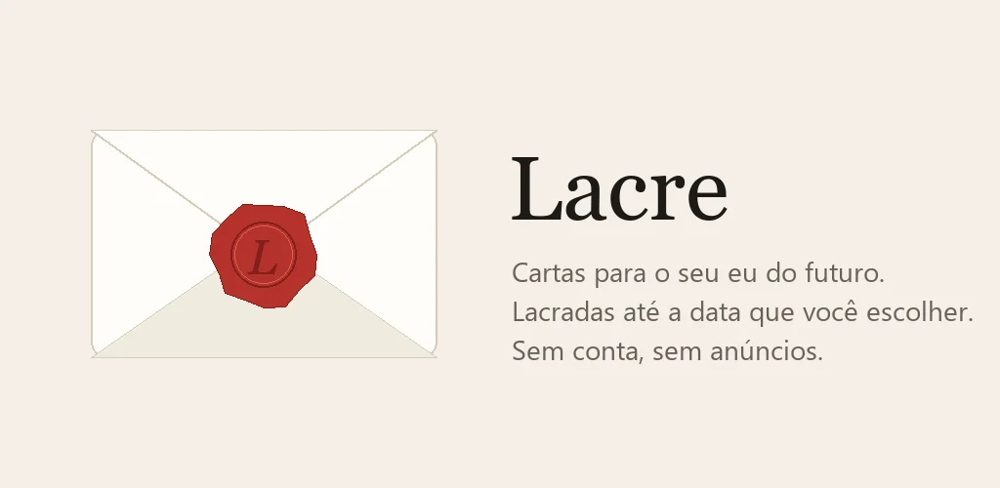

Lacre
Lacre: Cartas para o Futuro · Estilo de vida
Escreva uma carta, escolha a data e lacre. Nem você lê antes.
Em breve na Google PlayO app está nos últimos ajustes antes de ir pra loja.
- Android
- Sem cadastro
- Sem anúncios
- Grátis + Pro

O que ele faz
Uma cápsula do tempo no bolso
Escreva pro seu eu do futuro, escolha quando a carta abre e lacre com cera.
Perguntas guiadas
O que te preocupa, do que você tem orgulho, uma previsão, um conselho. Pra quando faltar o que escrever.
Lacrada de verdade
Até o dia chegar, a carta não abre. Se precisar muito, dá pra quebrar o lacre, mas fica marcado.
Aviso na manhã do dia
Uma notificação avisa que a carta está pronta, sem mostrar nada do conteúdo.
Responda com outra carta
Depois de abrir, escreva de volta e mantenha a conversa com você mesmo.
Quanto custa
Grátis com até 3 cartas lacradas, pra sempre. O Lacre Pro libera cartas ilimitadas, esperas de até 10 anos, uma foto por carta, todas as cores de lacre e backup, com um pagamento único. Sem assinatura.
Seus dados
As cartas ficam só no seu celular, lacradas. Ninguém lê, nem a gente, nem você antes da data.